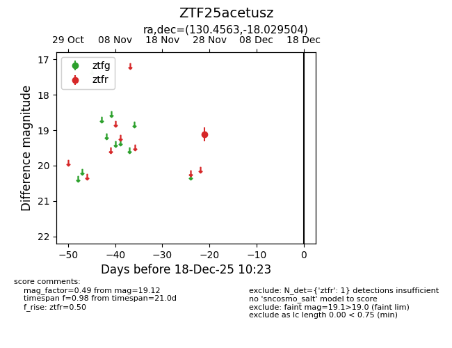
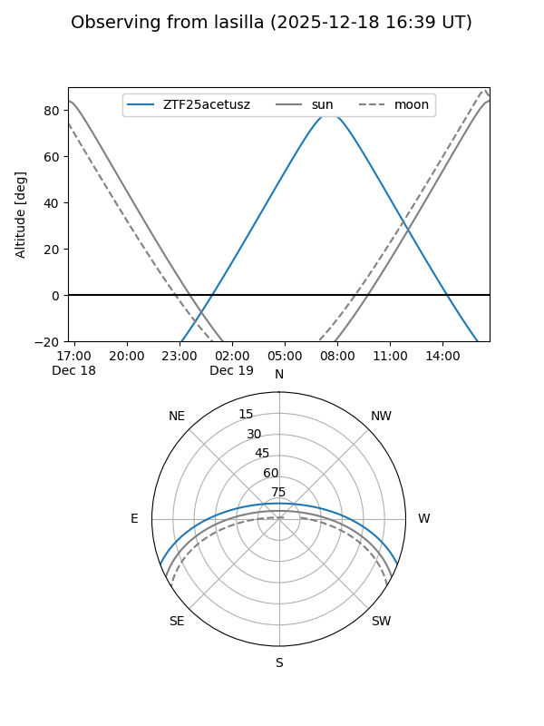
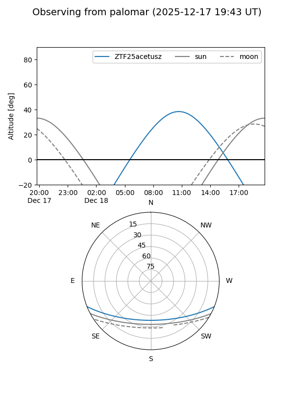

ZTF25acetusz
Target ZTF25acetusz at 2025-12-18 11:17
Aliases and brokers:
FINK: fink-portal.org/ZTF25acetusz
Lasair: lasair-ztf.lsst.ac.uk/objects/ZTF25acetusz
ALeRCE: alerce.online/object/ZTF25acetusz
alt names
ZTF25acetusz (ztf,fink_ztf)
Coordinates:
equatorial (ra, dec) = 130.4563,-18.02950
equatorial (HMS+DMS) = 08:41:49.51,-18:01:46.21
galactic (l, b) = (242.4079,+14.53135)
Photometry
last ztfr=19.12
1 ztfr detections
Lightcurve

Visibility


Additional plots